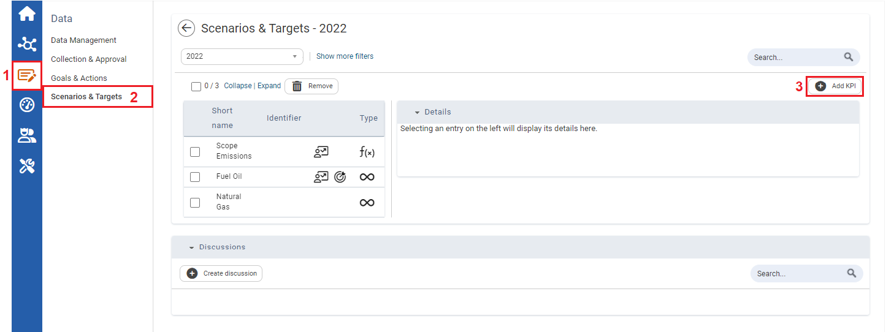
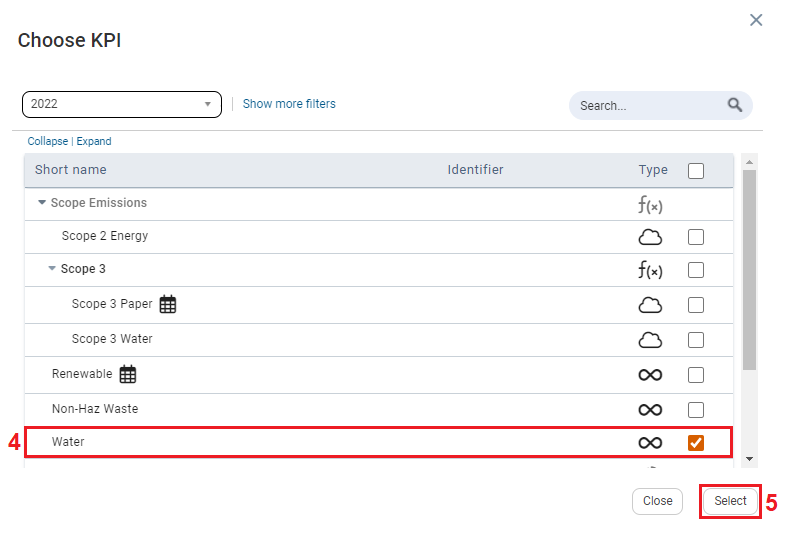
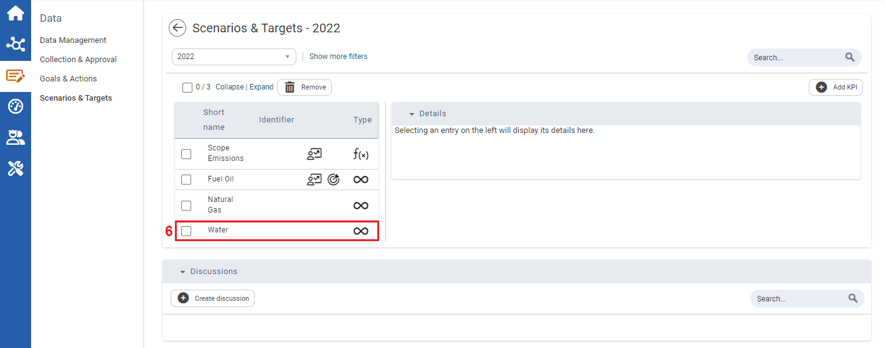

Adding a KPI in Scenarios and Targets
To Add a KPI

| 1 | On the left navigation panel, click Data. |
| 2 | Click Scenarios & Targets. |
| 3 | Click the Add KPI tab. Choose KPI window opens. |

| 4 | On the Choose KPI window, select a KPI. |
| 5 | Click Select. |

| 6 | The added KPI displays in the KPI list. |